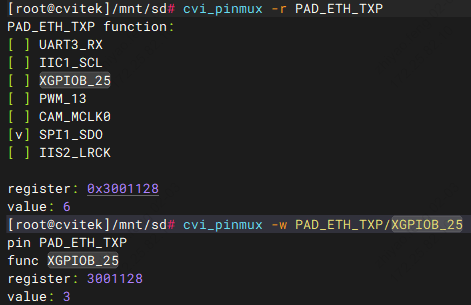

12. CVI PINMUX 操作指南¶
本文档说明在 CV184x 平台上如何配置引脚复用（Pinmux）：U-Boot 内配置方式、内核下使用 cvi_pinmux 工具，以及 ephy 引脚切换为 GPIO/SPI 的示例。
12.1. 操作准备¶
使用 SDK 提供的内核；若需在系统启动后使用
cvi_pinmux工具，需在 SDK 编译前通过 menuconfig 勾选 Pinmux 相关选项，编译并烧录后即可在终端或 SSH 下执行cvi_pinmux。
12.2. 操作流程¶
12.2.1. U-Boot 下 Pinmux 配置¶
U-Boot 阶段的 pinmux 在源码文件 u-boot-2021.10/board/cvitek/cv184x/board.c 中通过宏配置，例如：
#define PINMUX_CONFIG(PIN_NAME, FUNC_NAME) \
mmio_clrsetbits_32(PINMUX_BASE + FMUX_GPIO_FUNCSEL_##PIN_NAME, \
FMUX_GPIO_FUNCSEL_##PIN_NAME##_MASK << FMUX_GPIO_FUNCSEL_##PIN_NAME##_OFFSET, \
PIN_NAME##__##FUNC_NAME)
参数含义：
PIN_NAME：引脚名，与 pinlist 文档中第一列 Signal Name 对应。
FUNC_NAME：功能名，与 pinlist 文档中要切换到的功能（Function 列）对应。
示例：将 UART2 的 TX/RX 引脚分别配置为 UART4 的 TX/RX 功能，在 board.c 中添加：
PINMUX_CONFIG(UART2_TX, UART4_TX);
PINMUX_CONFIG(UART2_RX, UART4_RX);
某引脚支持哪些 FUNC_NAME，可查阅 pinlist 文档中该 Signal Name 对应的 Function 列。
12.2.2. 内核下 Pinmux 配置（cvi_pinmux 工具）¶
工具准备：在 SDK 中执行 menuconfig，搜索并勾选 pinmux 相关选项后重新编译、烧录；系统启动后在终端或 SSH 中即可使用 cvi_pinmux。
命令说明：执行 cvi_pinmux -h 可查看帮助。常用命令如下：
cvi_pinmux -p # 列出所有引脚
cvi_pinmux -l # 列出所有引脚及其当前功能
cvi_pinmux -r pin # 读取指定引脚的当前功能
cvi_pinmux -w pin/func # 将引脚设置为指定功能
示例：将 UART2 的 TX、RX 分别设为 UART4 的 TX、RX：
cvi_pinmux -w UART2_TX/UART4_TX
cvi_pinmux -w UART2_RX/UART4_RX
输出中会显示引脚名、目标功能、寄存器地址与写入值。可通过 cvi_pinmux -l 查看 SoC 上所有引脚及可选功能，或通过 cvi_pinmux -r pin_name 查看某引脚当前功能及可选功能。
12.3. ephy 引脚切换为 GPIO 或 SPI¶
以下以 ephy 相关引脚为例，说明如何将其切换为 GPIO 或 SPI 功能并做简单验证。
12.3.1. 切换为 GPIO¶
步骤 1：通过寄存器开启 GPIO 功能
devmem 0x03009804 32 0x1
devmem 0x0300907C 32 0x0500
devmem 0x03009078 32 0x1000
devmem 0x03009050 32 0x4000
devmem 0x0300907C 32 0x0
devmem 0x03009804 32 0x0
devmem 0x03009804 32 0x1
devmem 0x03009808 32 0x181
devmem 0x03009800 32 0x0905
devmem 0x0300907c 32 0x0500
devmem 0x03009078 32 0x1f00
devmem 0x03009074 32 0x606
devmem 0x03009070 32 0x606
步骤 2：用 cvi_pinmux 将引脚设为 GPIO（以 PAD_ETH_TXP 为例）
cvi_pinmux -r PAD_ETH_TXP
cvi_pinmux -w PAD_ETH_TXP/XGPIOB_25
{kind=link}

步骤 3：验证 GPIO 输出
GPIOB 组基号为 448，PAD_ETH_TXP 对应 XGPIOB_25，则 GPIO 编号为 448 + 25 = 473。在 sysfs 中导出并拉高/拉低，观察电平变化是否正常：
echo 473 > /sys/class/gpio/export
echo out > /sys/class/gpio/gpio473/direction
echo 1 > /sys/class/gpio/gpio473/value
cat /sys/class/gpio/gpio473/value
echo 0 > /sys/class/gpio/gpio473/value
cat /sys/class/gpio/gpio473/value

12.3.2. 切换为 SPI¶
以 PAD_ETH_TXP、PAD_ETH_TXM 为例，将引脚切到 SPI1 的 SDO、SDI 后，可短接进行环回测试。
步骤 1：将引脚配置为 SPI1 功能
cvi_pinmux -r PAD_ETH_TXM
cvi_pinmux -w PAD_ETH_TXM/SPI1_SDI
cvi_pinmux -r PAD_ETH_TXP
cvi_pinmux -w PAD_ETH_TXP/SPI1_SDO
步骤 2：短接 SPI 的 MOSI 与 MISO，做环回测试
若 data.bin 与 data_out.bin 一致，则说明 SPI 收发正常：
dd if=/dev/urandom of=data.bin bs=2k count=1
./spidev_test -D /dev/spidev1.0 -s 10000000 -i data.bin -o data_out.bin
diff data.bin data_out.bin